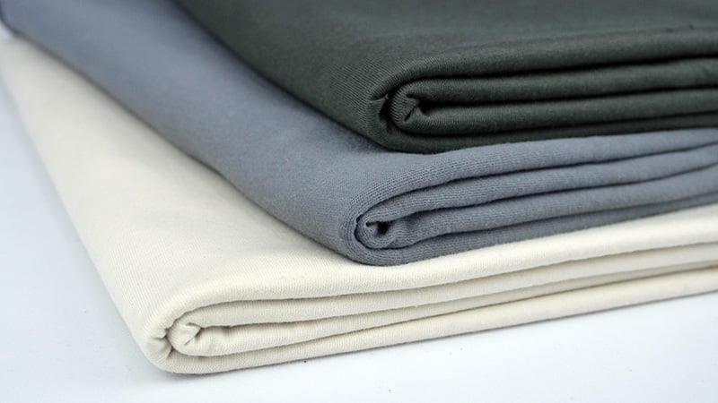

← Kembali ke Produk
Kontak
Kain Katun
Rp45.000 / m
Kain katun lembut dan nyaman untuk sehari-hari Halus–sedang, jatuhnya natural; tidak licin.
| Lebar | 150 cm |
| Gramasi umum | ±110–160 gsm (poplin/combed); bisa lebih tebal untuk twill/brushed |
| Perawatan | Cuci mesin mode lembut, hindari air terlalu panas agar tidak menyusut; setrika suhu sedang |